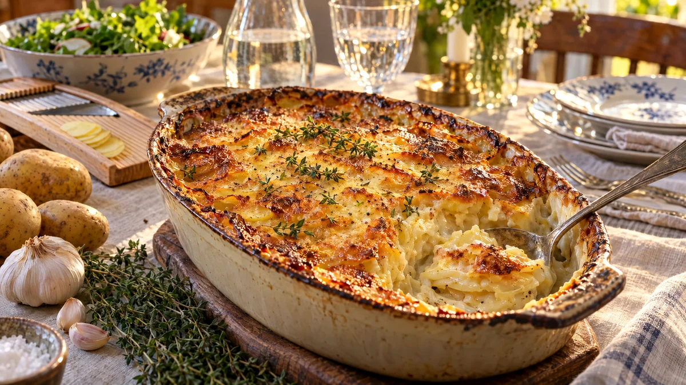

RESTFEST · RECEPTTillbehör
Krämig potatisgratäng utan mjölk
En påse potatis, en lök och ett paket havregrädde. Tunna potatisskivor gräddas långsamt i en vitlöksdoftande havregrädde med timjan och muskot, tills de blir krämiga inuti och gyllene och krispiga överst. Söndagsstekens bästa vän, som även den mjölkallergiska kan ta två portioner av.
- Förberedelse
- 20 min
- Tillagning
- 60 min + 10 min vila
- Portioner
- 4–6 som tillbehör
- Nivå
- Nybörjare
Bra att veta. Läs alltid innehållsförteckningen. Mjölk och ägg kan gömma sig i margarin, choklad, ströbröd, buljong, korv och bröd. Laktosfritt är inte mjölkfritt, laktosfria produkter innehåller fortfarande mjölkprotein.
 Det här behöver du
Det här behöver du
Tryck på + vid det du behöver köpa.
Gör så här
- Sätt ugnen på 200 grader. Smörj en ugnsform, ca 20 × 30 cm.
- Skala potatisen och skiva den tunt, ca 3 mm, gärna med en mandolin. Skölj inte skivorna, stärkelsen gör gratängen krämig.
- Skala och skiva löken tunt och finriv vitlöken.
- Värm havregrädde, havredryck, vitlök, salt, vitpeppar, muskot och timjan i en stor kastrull tills det precis börjar sjuda.
- Lägg i potatis och lök, vänd runt och låt sjuda i 5 minuter under omrörning, så att gratängen tjocknar och blir krämigare.
- Häll allt i formen och jämna till ytan. Strö över ost eller ströbröd.
- Grädda i mitten av ugnen i 50–60 minuter, tills potatisen är mjuk när du sticker i en kniv och ytan är gyllenbrun. Lägg folie över om ytan mörknar för snabbt.
- Låt gratängen vila i 10 minuter före servering, så sätter sig krämen.
Dekoration och servering
- Strö över några färska timjankvistar och lite nymald peppar precis före servering.
- Servera till stek, köttbullarna i recept 135, grillad fisk eller helrostad blomkål (recept 69).
- Alla veganska ostar smälter inte. Välj en som är märkt för gratinering, eller använd ströbröd i stället.
- Gratängen kan förberedas en dag i förväg och gräddas direkt från kylen. Räkna då med 15 minuter extra.
Mått och ugnstemperaturer
Måtten är svenska (dl, msk, tsk, krm). Ugnstemperaturerna gäller vanlig ugn med över- och undervärme; med varmluft, sänk med 20 grader.